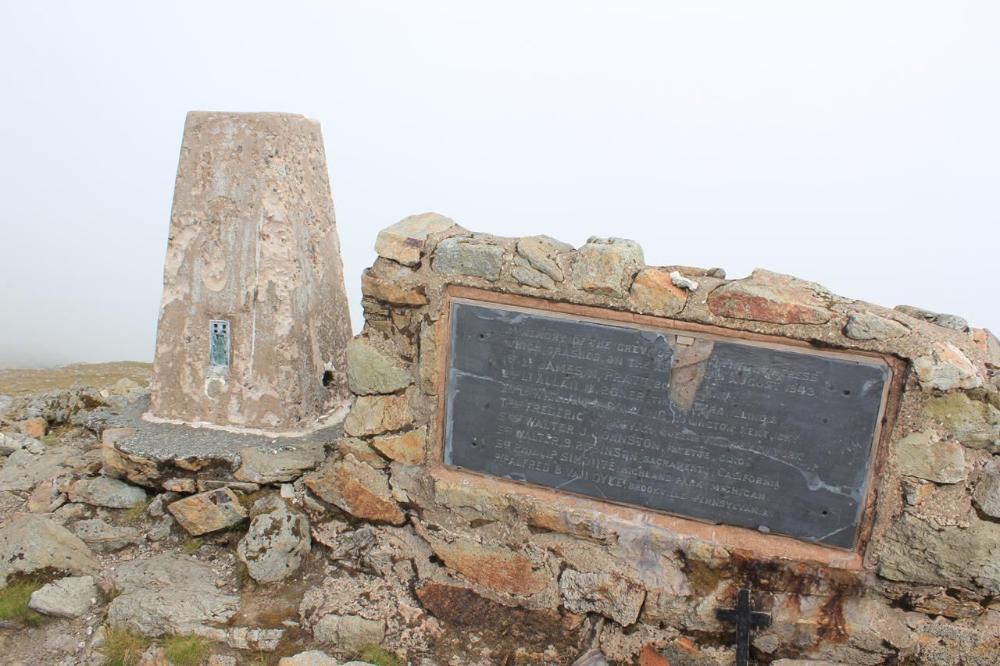
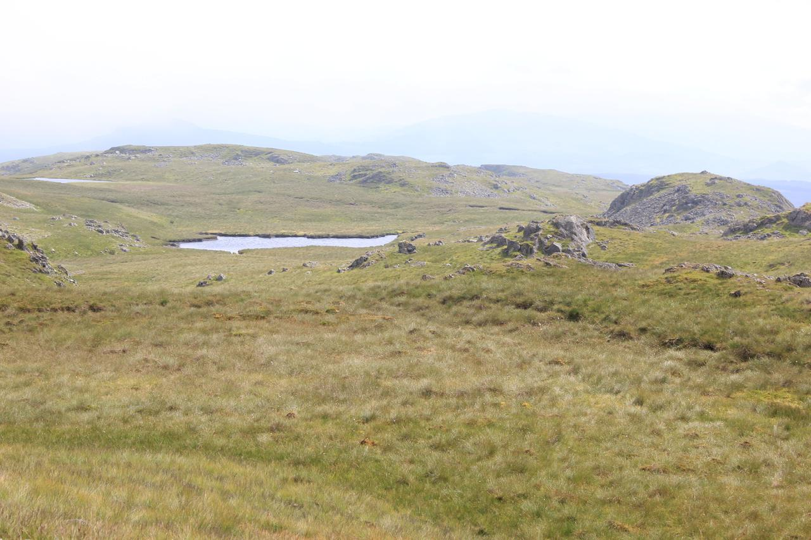
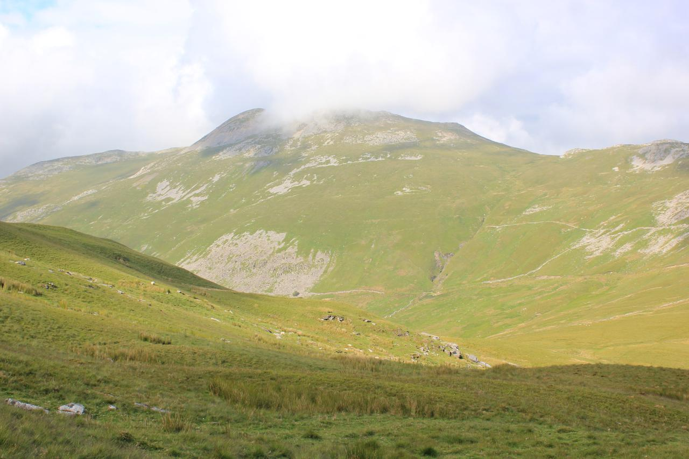
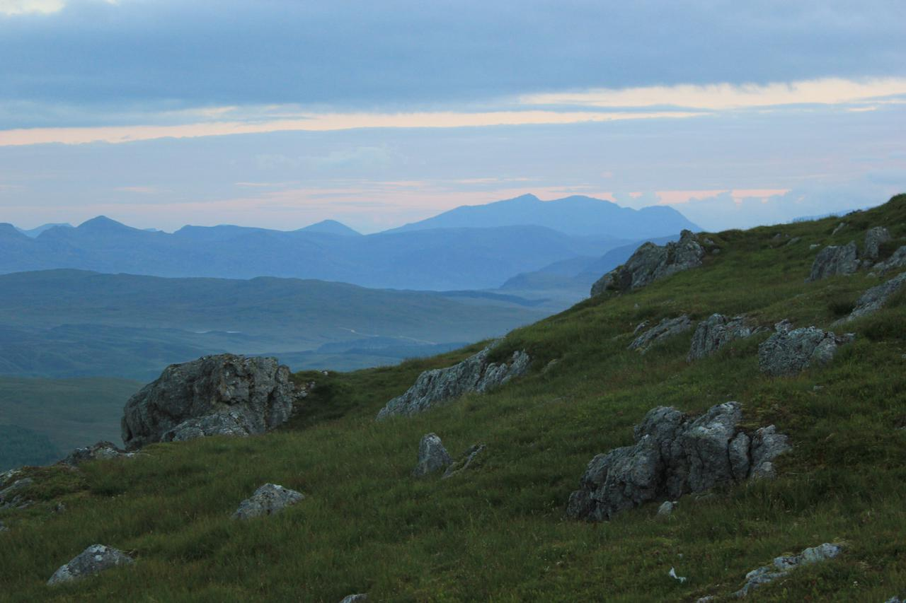
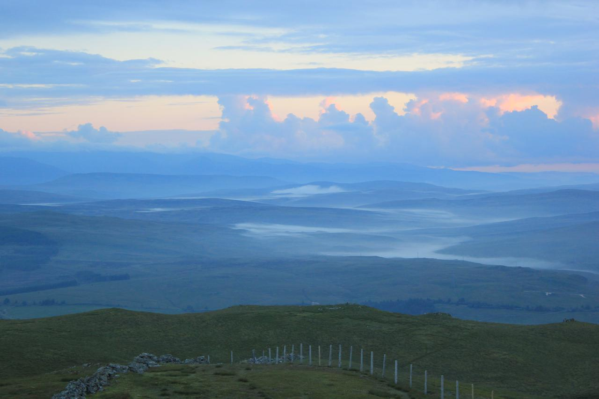
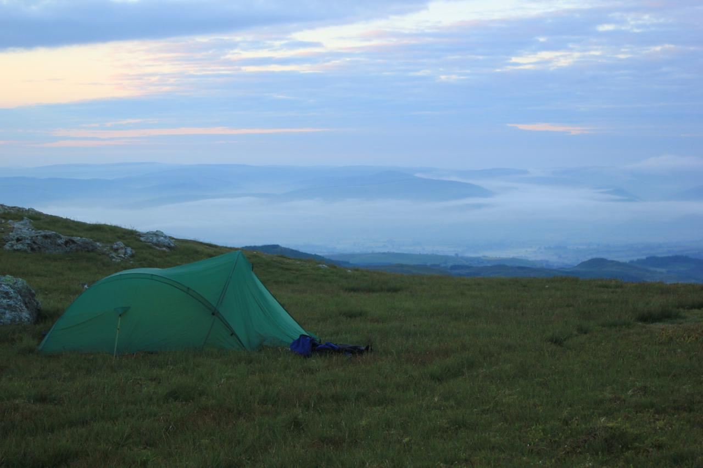
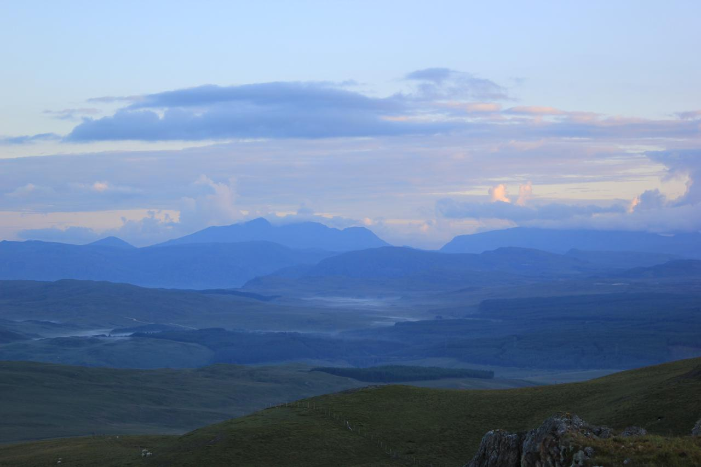
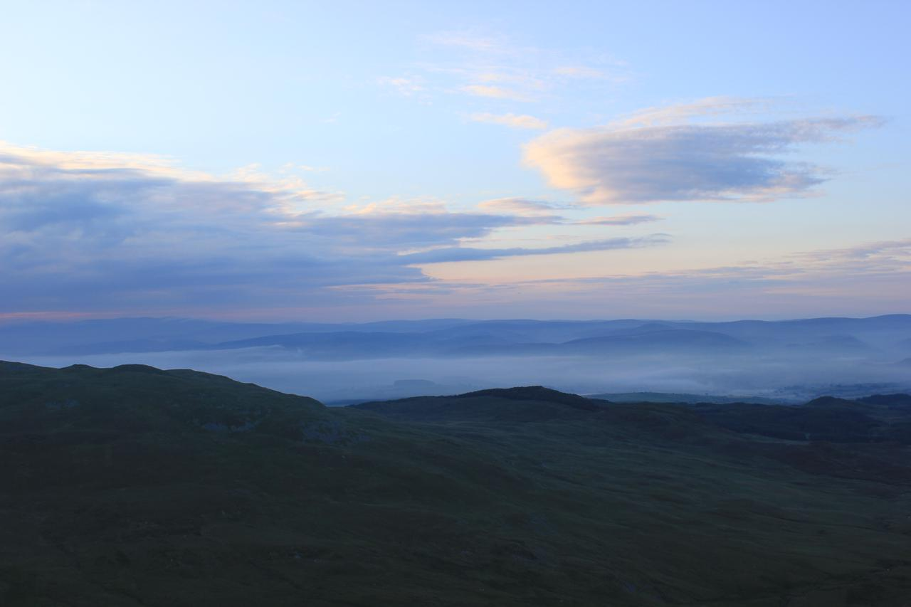

Arenigs
Summit cairn and memorial Arenig Fawr
{kind=link}
I have done this backpack a couple of times before. However, I had no hesitation in repeating it. The Arenigs are relatively unfrequented and have panoramic views over most of the mountains of North Wales. The summit of Moel Llyfnant seems to be rarely visited, as there are only vague signs of tracks leading up to the top.
After a long period of settled good weather the Mountain Weather Information Service was predicting an area of low pressure over Wales on Saturday with a great deal of uncertainty about conditions. The summits were going to be misted out early on and there was a possibility of heavy showers. However, the forecast for Sunday was much better.
Moel Llyfnant appears from the mist

Driving along the A55, I could see see clouds over the Carneddau, but it wasn't raining. I stopped at Y Caban in Deniolen for a cup of tea and lemon drizzle cake. It took the woman behindthe counter about five munutes to ask me what I wanted to order, as she was looking at photos on here phone, even though I was only standing a couple of feet away from her. I ended up buying a slice of Bakewell to take my bill over £5, so I could avoid a surcharge for paying by debit card.
As I drove thought the Llanberis Pass, only the tops of the peaks were covered by cloud. Continuing through Beddgelert I could see that the summit of Cnicht was clear. However, as I got close to Ffestiniog, I could see the Moelwyns submerged in cloud and this part of Wales seemed to be having much worse weather than further west. However, I decided to keep going as MWIS had promised an improvement in the weather as the day went on.
Small pools on the South ridge of Arenig Fawr
{kind=link}
It was after 12:30pm when I arrived in the car park opposite the quarry at Clogwyn Maen Glogog. I could see the summit of Arenig Fach, but mist was drifting around the top of Arenig Fawr. The quarry was full of large concrete road sections. The electricity company were rewiring the overhead pylons that run through the valley and using the car park as an equipment dump. I sorted out my gear and set off on the longish walk along the road towards the track leading up to Llyn Arenig Fawr. Leaving the car opposite the quarry would greatly reduce the road walking on the second day.
The descent to the col below Moel Llyfnant
{kind=link}
When I reached the start of the track there was a large red sign at the bottom saying it was closed. However, there was no work going on, so I decided to ignore the sign. A short way up the track I could see why it has been closed. The cables between the pylons ran right over the track, which would be a major hazard for anyone underneath when they were working on the pylons. Since it was Saturday there was no work going on, although all around the valley I could see where they had laid the temporary road surfaces under the pylons.
Cader Idris at dawn
{kind=link}
When I reached the bothy I took off my rucksack and had a look round inside. It was clean and tidy. Written on an old biscuit tin lid was the email address (arenigtony@gmail.com) of one of the people who helps to maintain the bothy. I sat on one of the benches outside and ate the huge slice of Bakewell that I had bought from Y Caban. After lunch I walked the short distance up to the reservoir to fill my Travel Tap.
The mist was partially covering the crags at the far end of the lake as I began to make my way up the path. At the top of the first steep section I met a man descending who told me that the summit was misted out and there was a cold breeze. Last time I had climbed directly up on the North ridge to get better views. However, this time there wasn't any point, as I wouldn't be able to see anything. I just followed the main path that countours along the slope below the ridge before a final slog up to the summit.
Mist filled valleys at dawn
{kind=link}
The mist cleared a few times, but had descended again just before I reached the summit. Just below the summit shelter I met a man and a woman descending. Not surprisingly there wasn't anybody else on the summit. The mist again cleared briefly but after a few seconds the summit was covered again. After a short rest, I took a compass bearing to make sure that I would be descending along the South ridge. Once I had begun to descend below the south summit I dropped out of the cloud. I could just about make out Moel Llyfnant on the other side of the valley as layers of cloud drifted past, but the lakes at the end of the south ridge were clearly visible below me. I made my way down the grass slope, using the fence as a hand rail and along to the second pool. I dropped my rucksack a short distance away from the pool and took my Platypus bottles over to the pool. I had a bit of trouble finding a place on the bank where I could reach into the pool without disturbing the peat on the bottom. On my first visit, I had collected water from a small stream at the start of the descent to the col below Moel Llyfnant. However, last time I came this way the stream was dry and I suspected it might be dry today. In the event I was proved right.
Tent on Moel Llyfnant
{kind=link}
I used the pile of stones placed next to the wire fence that marks the start of the descent to the col below Moel Llyfnant. There is an indistinct path that leads down to the track at the col, whcih I followed. The section at the bottom is often very wet, but after the recent dry spell my feet only got slightly damp as I tussock jumped. The mist seemed to be lifting. The summit of Moel Llyfnant was clear and the summit of Arenig Fawr kept popping out of its covering.
The climb up to Moel Lyfnant via its East flank is steep and unremitting. There are traces of a track in places, but I find it's best just to take a direct line to the summit rocks. I emerged at the top almost exactly at 6:00pm. There was a stiff breeze blowing from the East. My usual camping spot between some rocks was quite exposed to the breeze, so I dropped down to another flat spot a few yards to the west, which was more sheltered. I soon had the tent up and after a quick cup of hot chocolate I went on a short wander to take some photographs.
Cader at sunrise
{kind=link}
I was hungry, so when I got back to the tent I heated some water and had one of the Adventure Foods expedition breakfasts. This was OK, but definitely not as good as the Bewell Foods Hot Cereal Start. I felt quite tired so settled into my sleeping bag. About 6:30pm the mist descended over the summit and all views were obscured.
I turned on my phone, hoping to send some photographs home. There was excellent reception, but it was on a different network to mine (Three). On my previous two visits I had been using T-Mobile, which has solid 3g coverage o the summit.
I got up sometime around midnight to find that the cloud had lifted above the summit and I could see the lights of all the surrounding towns. The next time I woke it was 5:30am and daylight. Looking out of the tent I could see it was still clear, so I got out for a look round. There was quite a bit of thick cloud higher up, particularly around the Arans. A couple of the valleys had a covering of early morning mist. The sun was hidden behind a bank of cloud, so there wasn't a spectacular sunrise. I made a cup of hot chocolate and porridge and then went back to bed. I got up again about 6:15 am to take some more photographs and pack up.
Early morning mist
{kind=link}
I planned to go over to Foel Boeth and Moel y Slates having been here twice without climbing them. However, as I was packing the tent away about 7:00am the mist descended again. I could see glimpses of the sun above it, so hoped it might clear. It wasn't to be and if anything it got thicker. I decide that walking over Foel Boeth would be a waste of time if I couldn't see anything. It looked a pretty uninspiring hill even in clear visibility. I set off down the North ridge following a compass bearing, as there is no clear path, but numerous sheep tracks which wander off in various ransom directions giving you the illusion that you are following a path. I was quite a way down the ridge before I emerged from the cloud. My big toe on my left foot was hurting. I had bruised it on my Carneddeau trip and now it felt as though the nail was coming off. I scrambled down the last bit of the ridge to join the farm track.
I decided to follow the track from Amnodd-bwll that lead towards the railway track, rather the one that takes the higher ground and goes past Amnodd-wen. This latter track has a section which is sunken next to a dry stone wall. On both my previous visits I have got very wet feet as there is no real way of avoiding the boggy section. The track that leads to the railway initially goes through the forest, thus has restricted views. Once out of the forest the views are just as good as those from the higher track. I reached the railway track and started to follow it. It doesn't seem to get much traffic and some sections were covered by long grass. I met a couple of cows with calves on the track, but shooed them up onto the hillside, so I wouldn't have to walk to close to them. The railway track emerged onto the road. This final section along the road back to the quarry seems much longer than it actually is. Once back at the truck I had another cup of hot chocolate.
Whilst I was walking back along the railway track the summits had all cleared. I did consider doing another walk to take advantage of the clear conditions. Unfortunately, I had to drive back through Chester to pick up my daughter in the early afternoon, which didn't leave enough time.
Although the weather had been much better on my last two trips to the Arenigs, it hadn't been too bad this time. I hadn't seen the spectacular sunsets and sunrises of my previous two trips, but the mist filled valleys at dawn compensated. Plus I always enjoy a summit camp away from everyone else.